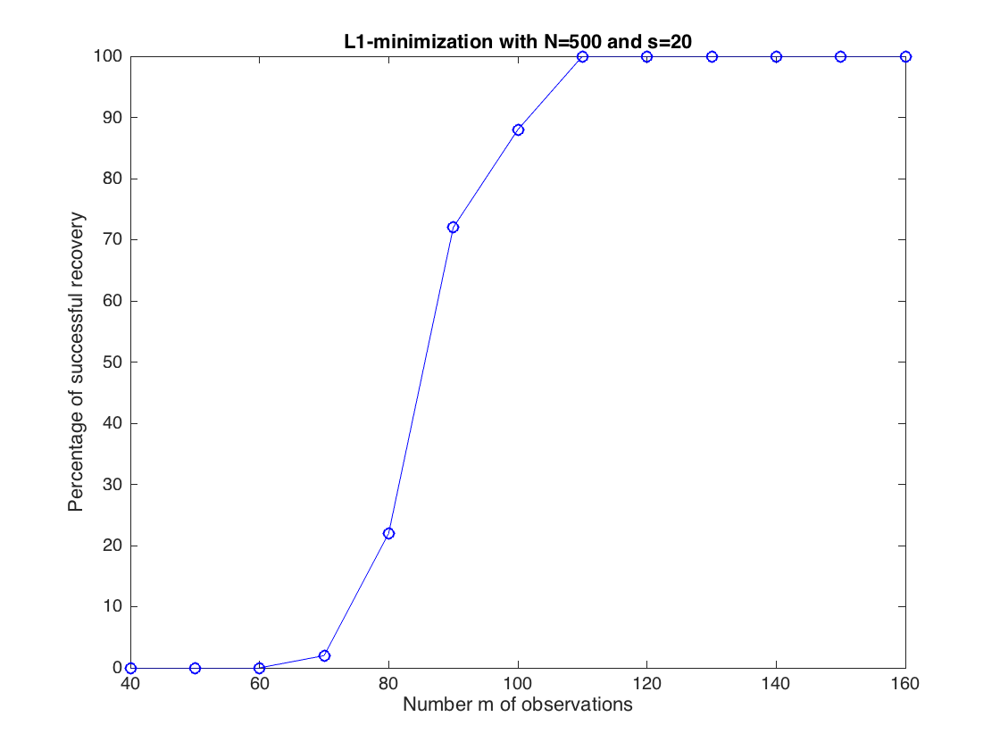

Contents
%%%%%%%%%%%%%%%%%%%%%%%%%%%%%%%%%%%%%%%%%%%%%%%%%%%%% % Computational illustration for Chapter 14 % Sparse Recovery from Linear Observations %%%%%%%%%%%%%%%%%%%%%%%%%%%%%%%%%%%%%%%%%%%%%%%%%%%%% clear all; clc; % CVX is needed to execute this file % comment out the next line if MOSEK is not installed cvx_solver mosek
Illustration of the success of L1-minimization
generate a sparse vector and the corresponding observation vector
select problem sizes
N = 800; m = 200; s = 40; % create the sparse vector x to be recovered x = zeros(N,1); aux = randperm(N); supp = sort(aux(1:s)); x(supp) = randn(s,1); % produce the observation vector y A = sqrt(pi/2/m)*randn(m,N); y = A*x;
Verify that x is succesfully recovered by L1-minimization
cvx_begin quiet variable x0(N) minimize norm(x0,1) subject to A*x0 == y; cvx_end sprintf(strcat('Recovery considered to be exact, with a relative L2-error of'... , 32, num2str(norm(x-x0)/norm(x))))
ans = Recovery considered to be exact, with a relative L2-error of 4.2536e-13
Comparison of L1-miminizations performed in three different ways:
first, by straight L1-mimimization (same as above)
tic; cvx_begin quiet variable x0(N) minimize norm(x0,1) subject to A*x0 == y; cvx_end t0 = toc; rel_error0 = num2str(norm(x-x0)/norm(x)); sprintf(strcat('Recovery performed in', 32, num2str(t0),... 'sec with a relative L2-error of', 32, rel_error0,... 32, 'by straight L1-minimization')) % then, by the first linear program (slack vector c such that c >= abs(z)) tic; cvx_begin quiet variable x1(N) variable c(N) minimize sum(c) subject to A*x1 == y; c >= +x1; c >= -x1; cvx_end t1 = toc; rel_error1 = num2str(norm(x-x1)/norm(x)); sprintf(strcat('Recovery performed in', 32, num2str(t1),... 'sec with a relative L2-error of', 32, rel_error1,... 32, 'by the first linear program')) % finally, by the second linear program (slack vectors z^+ and z^-) tic; cvx_begin quiet variable z_p(N) nonnegative variable z_m(N) nonnegative minimize sum(z_p+z_m) subject to A*(z_p-z_m) == y; cvx_end t2 = toc; x2 = z_p-z_m; rel_error2 = num2str(norm(x-x2)/norm(x)); sprintf(strcat('Recovery performed in', 32, num2str(t2),... 'sec with a relative L2-error of', 32, rel_error2,... 32, 'by the second linear program'))
ans = Recovery performed in 0.24963sec with a relative L2-error of 4.2536e-13 by straight L1-minimization ans = Recovery performed in 0.40572sec with a relative L2-error of 2.058e-15 by the first linear program ans = Recovery performed in 0.3616sec with a relative L2-error of 4.008e-15 by the second linear program
explore the influence of the number of measurements
N = 500; s = 20; m_min = 2*s; m_max = 8*s; m_inc = 10; n_tests = 50; res = zeros(n_tests,m_max); for m = m_min:m_inc:m_max for t = 1:n_tests x = zeros(N,1); aux = randperm(N); supp = sort(aux(1:s)); x(supp) = randn(s,1); A = sqrt(pi/2/m)*randn(m,N); y = A*x; cvx_begin quiet variable xstar(N) minimize norm(xstar,1) subject to A*xstar == y; cvx_end res(t,m) = ( norm(x-xstar) < 1e-5*norm(x) ); end end plot(m_min:m_inc:m_max,100*mean(res(:,m_min:m_inc:m_max)),'b-o') xlabel('Number m of observations') ylabel('Percentage of successful recovery') title(strcat('L1-minimization with N=',num2str(N),' and s=',num2str(s)))